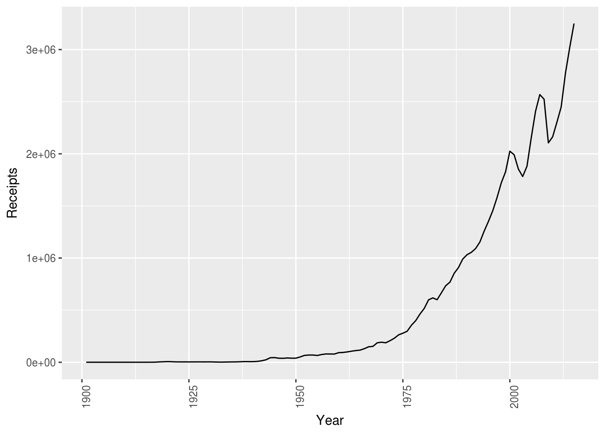
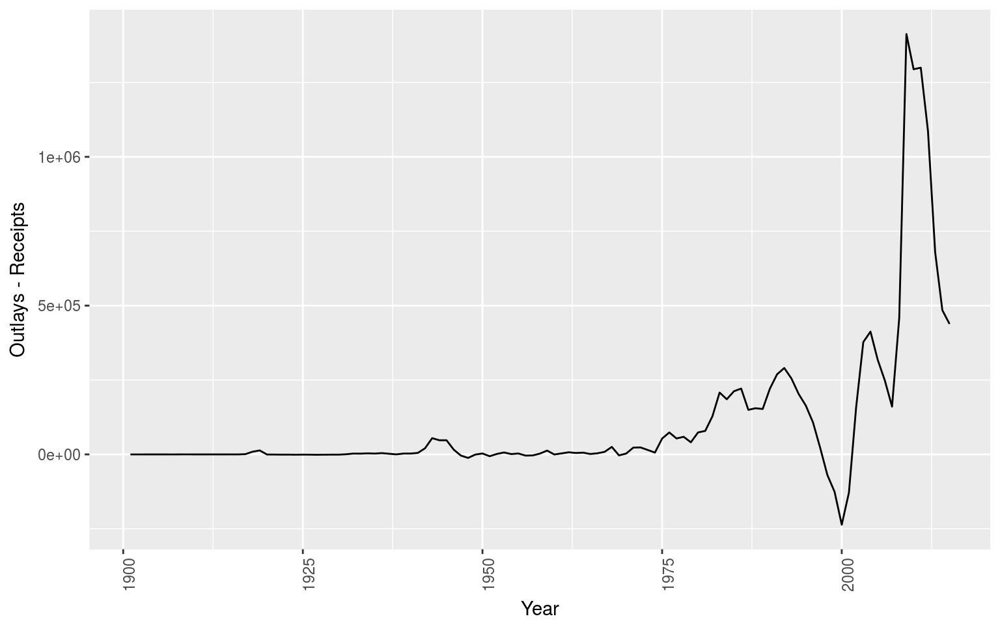

Setting Some Priors for the Next Four Years
Introduction
library(dplyr)
library(ShRoud)
library(readr)
library(readxl)
library(ggplot2)
source("infobox.R")
infobox(list(
"Status" = "Incomplete",
"Last Revision" = file.info("SettingSomePriorsForTheTrumpAdministration.Rmd")$mtime
))| Status | Incomplete |
| Last Revision | 2017-12-15 13:57:25 |
The general tenor of the media has been pretty gloomy lately. I’m troubled that these narratives aren’t making concrete criteria for their predictions about the Trump administration. The danger this presents is that we can retroactively point to some statistics which are “worse” and claim that this is proof that the Administration failed. To avoid this, we should explicitly list out the statistic, and preferably the source of that statistic, to creat an objective judgement criterion for each prediction.
Accordingly, I’m going to lay out a few predictions with some statistics, so that they can be fairly scored by 2020.
Economy
GDP will be higher in 2020 than in 2016.
It generally increases. Moreover…
Per-Captia GDP will be higher in 2020 than in 2016.
GDP generally increases faster than the US Population.
However…
The US will have another recession.
The National Bureau of Economic Research dates recessions on a monthly basis back to 1854; according to their chronology, […] From 1945 to 2001, and 10 cycles, recessions lasted an average 10 months and expansions an average of 57 months.
If this pattern holds (within reasonable margins of error), then a recession should occur around 5 years after the end of the last recession. The Great Recession ended in mid-2009, so a cyclical recession should be expected around early-to-mid 2014. Since that hasn’t occurred yet, it isn’t a stretch to think that we might be “due” for a recession any quarter now.
However, in social science, cyclical models are usually blunt instruments that don’t bear much weight under scrutiny. A better model is one in which entering a recession is an event which occurs with some probability. At any time step, that probability is the same, so we’re never “due” for a recession, sometimes we just get unlucky and it happens. Let’s call this the “gambler’s model.”
If this model is more correct, then we can make some explicit inferences. We’ve had 11 recessions since 1945, for a roughly .15 annual probability. Thus the four-year probability of no recessions is \((1-.15)^4\approx.51\). In other words, this model predicts that we are very slightly more likely not to have a recession than to have one. So why should I predict otherwise?
The truth probably lies somewhere between a cyclical model and a gambler’s model. However, the gambler’s model’s confidence is so low that effectively any evidence tips the scales towards the prediction that a recession is more likely than not over a four-year window. I place my bet accordingly. The US is at least slightly more likely to have a recession than not in the next four years.
The dollar will fall relative to the yuan.
The Chinese Yuan has been losing ground against the US Dollar since 2014.
Note that the traditional metric is the dollar’s valuation against the Euro. However, the growth of right-wing populism is as strong in Europe as it was to elect Trump in the United States. Accordingly, we may see some significant confounding with Eurozone member states and right-wing populaist leaders like Donald Trump. Accordingly, the Euro becomes a less stable and more confounded meterstick against which to measure the dollar. If President Trump is actually harming the US economy, this is one metric where that effect might shine through.
Inequality will Grow.
If Republican policies on taxes are implemented (which looks exceedingly likely at this point), then the poor and middle classes will assume a larger tax burden, resulting in greater inequality. This is measured using a statistic called the Gini Coefficient (or Gini Index). Annoyingly, Gini Coefficients aren’t typically estimated for every nation in every year. The World Bank’s latest estimate of the US Gini index was in 2013, and it was approximately 41.06 (on a continuous 0-100 scale).
Pres. Trump’s personal wealth will grow faster than US GDP.
As of September 2016, Forbes Estimates that Donald Trump holds approximately $3.7 Billion in assets. Since the end of the Great Recession, the US has managed to scrape out an average of roughly 2% GDP annually. If we keep that pace, Pres. Trump’s assets should grow to around $4 Billion by 2020. Estimates of Donald Trump’s net worth have a pretty high variance. However, I expect Forbes will judge his holdings to be worth significantly more than $4 Billion in 2020, lending credence to the claims of effectively corrupt behavior by the President. It is not, however, a slam-dunk in a case against the President. Some natural appreciation of his assets and speeding of his acquisitions is likely. For example, the presidency can’t have hurt Pres. Obama’s sales revenues from his first two books.
Foreign Relations
The arena in which Donald Trump poses the greatest danger to the world is decidedly the international arena.
At least one new interstate war will begin by 2020.
The Correlates of War counts 95 distinct interstate wars fought between 1816 and 2007, or about one every two years, for a baseline expectation of 2 over the next four years. However, more recently, interstate wars have become considerably rarer.

While war seems to be generally declining, this does not obviate the need for international institutions and policies that play a favorable role in that outcome. (In the same way, being dry under an umbrella is a bad argument for putting the umbrella away.)
While I doubt that President Trump is itching to deploy US troops (in stark contrast to, say, Pres. George W. Bush), it is easy to imagine that the actions of a US president may incite wars of which the US is not a party. For example, Trump’s ambiguity about his intentions to respect the US’s obligations to its NATO allies may embolden Putin towards active conflict in the Balkans. Russia will fight three small local wars to seize power in these states (and possibly other former Soviet states).
This is just one of a wide variety of ways in which the world may stumble into interstate warfare in the near future. And so, I’m going to put my chips on one or more new interstate wars in the next four years.
Governance
The Supreme Court
The Supreme Court will be more Conservative in 2020 than in 2016.
In 2016, following the death of Justice Antonin Scalia, the mean Segal-Cover Ideology score on the Supreme Court was .42625. After a Trump nominee is consented by the Senate for the vacant seat, the mean score will fall a bit. This isn’t an especially strong prediction, as Scalia’s score (.000) was considerably lower than the mean score, and his successor’s is likely to be as well. Accordingly, I offer a stronger form:
The Supreme Court will be more Conservative in 2020 than in 2015.
When Scalia was on the bench, the mean Segal-Cover Ideology score was .379.
There have been 43 Justices confirmed since 1937, or slightly more than one every two years, meaning that Pres. Trump will be able to nominate two justices. The oldest two justices are Ruth Bader Ginsberg and Anthony Kennedy, a liberal (.68) and a moderate (.365) respectively.
If I had the time, a more thorough analysis would run a Monte-Carlo simulation of deaths based on actuarial estimates, and the effects on the court given who died, but I don’t have the time presently. However, I assign slightly greater than probability than not the the net effect on the court will be a drive to the right.
The Federal Budget, Defecit, and Debt
Federal revenue will be higher in 2020 than in 2016.
I started this section by prognosticating that federal revenues would decline, but the data totally changed my mind. Federal Revenues basically don’t decline:
if(!file.exists("../data-cache/FedBudget.xls")){
download.file("https://obamawhitehouse.archives.gov/sites/default/files/omb/budget/fy2017/assets/hist01z1.xls", "../data-cache/FedBudget.xls")
}
budget <- stfu(read_excel("../data-cache/FedBudget.xls", skip = 3))
names(budget)[1] <- "Year"
budget <- budget[3:118,1:3] %>%
mutate(Year = as.numeric(Year))
ggplot(budget, aes(Year, Receipts, group = 1)) + geom_line() + theme(axis.text.x = element_text(angle = 90, hjust = 1))
OK, so they do sometimes, but the two really good examples of declines in this graph are both during a single President’s tenure, and revenue was still higher at the end of his terms than it was at the beginning. Despite the general enthusiasm amongst Republicans for reducing the size of government during the Obama years, I suspect we’ll see the end of the Trump years with a larger, more expensive government.
The defecit will be larger in 2020 than in 2016.
Now that they have near-free-reign over the Federal Government, the Republicans are nearly silent about their concern for the nation’s long-term solvency. Rather, they will enact federal spending, resulting in less revenue and more debt.
ggplot(budget, aes(Year, Outlays-Receipts, group = 1)) + geom_line() + theme(axis.text.x = element_text(angle = 90, hjust = 1))
This, in turn, causes:
The national debt will be larger in 2020 than in 2016.
This is perhaps the weakest of my predictions, if only because it is the most likely. The national debt has basically consistently grown.

If we adjust for GDP, the picture is a little more complicated…

…but it still seems more likely than not that debt as a percentage of GDP will increase. For posterity, this is a wierd metric that I don’t really like very much.
Social
Health and Healthcare
The Uninsured Rate will be higher in 2020 than in 2016.
As the supporters of the Affordable Care Act are quick to point out, the ACA has been spectacularly successful at the task of reducing the population of uninsured people.
Since the Republicans have been unwavering in their determination to eliminate that law, it seems likely that the bill will be repealed, and the uninsured rate will rise.
The Mortality Rate will be higher in 2020 than in 2016.
The last eight years have been unusual, in that the population-wide mortality rate has increased:
However, this is a tiny reversal of a longer-term trend of mortality rates declining. The World Bank documentation on the Crude Death Rate points out that,
For example, let us consider the cases of China and Japan. The developed and wealthy nation of Japan started with a low mortality rate in the 60’s, in contrast with China’s high-but-falling-fast rate. In the 90’s, China’s fell to Japan’s level. Meanwhile, as the Japanese population began aging with a birthrate lower than the population replacement rate, the mortality starting climbing as fast as China’s had fallen. So, is the US more like China, with a growing young population, or like Japan with a growing old population and low birth rate?
We can infer from this plot that the US in the coming decades is more like Japan today.
You may notice that this has little to do with anything over which the President exerts any control. Please bear this in mind, moving forward.
Abortion will continue to be legal in 2020.
Gay Marriage
Gay marriage will continue to be legal in 2020.
Moreover,
Married gay couples will be more common in 2020 than in 2016.
In 2002, Gallup estimated that around 37% of adult couples in the US were cohabitating, while 63% were married. Though I don’t have the data to support it, it seems likely that this number has been slowly increasing since then.
In 2016, Gallup measured the married/cohabitating distribution for gay couples, and found that it’s quite close to 50-50, up from 33-66 prior to nationwide legalization. By 2020, I suspect that the rates will be approximately equal (i.e. married gay couples will be as common amongst gay couples as married straight couples are amongst straigth couples).